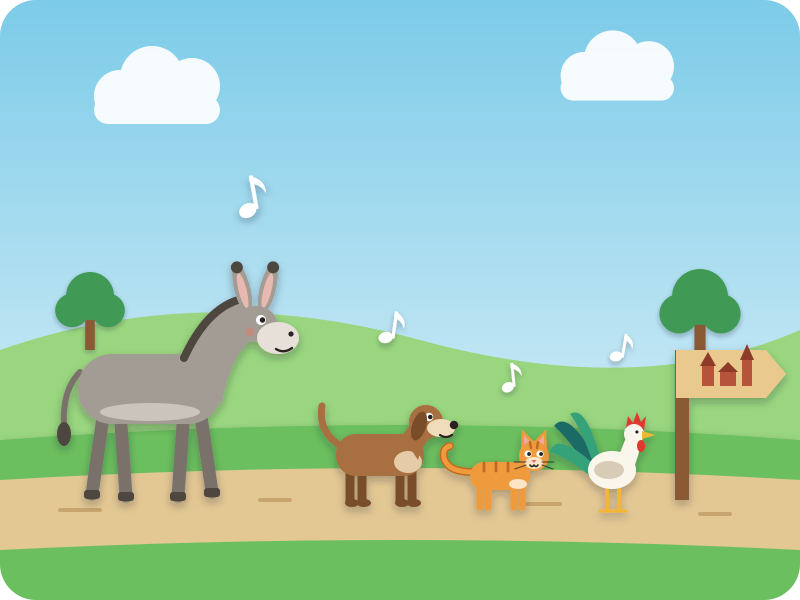
A folk tale from Germany
The Town Musicians of Bremen
"Story, story — are your ears open?" Kai: "Open!"
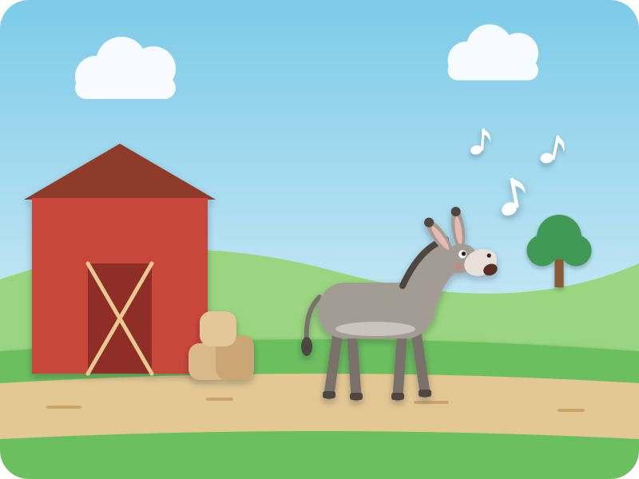
Once there was an old donkey. For years and years he carried heavy sacks for the farmer.
But one day the farmer said, "You're too old now." So the donkey said, "Then I'll go to Bremen and be a musician!"
"HEE-HAW!" Kai: "Hee-haw!"
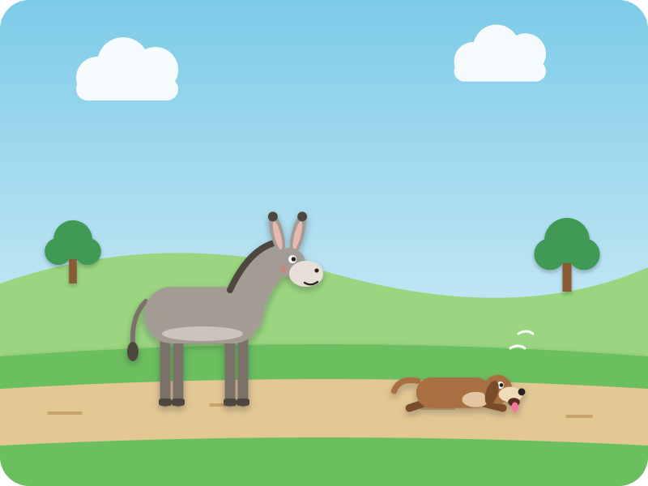
Down the road, an old dog lay puffing. "I'm too old to go hunting," he said, "so nobody wants me."
"Come with us to Bremen!" said the donkey. "We'll be musicians!"
"HEE-HAW! WOOF!" Kai does both
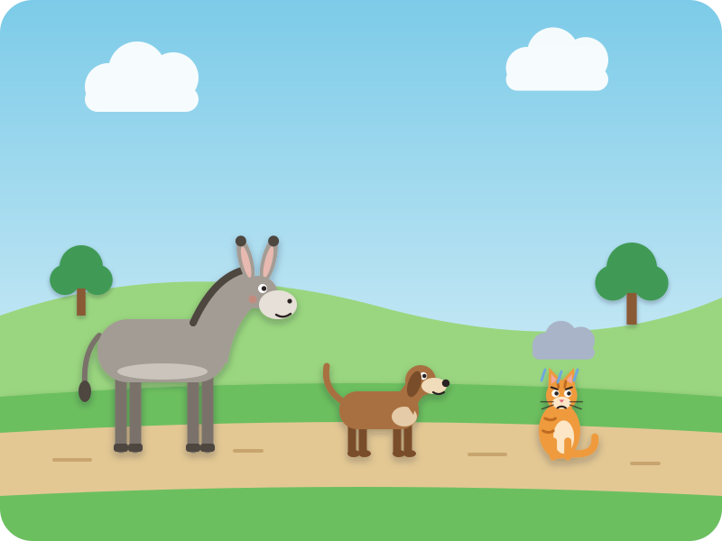
Next they met an old cat with a face like three rainy days. "I'm too old to catch mice," she sighed.
"Come with us to Bremen!"
"HEE-HAW! WOOF! MEOW!" Kai does all three
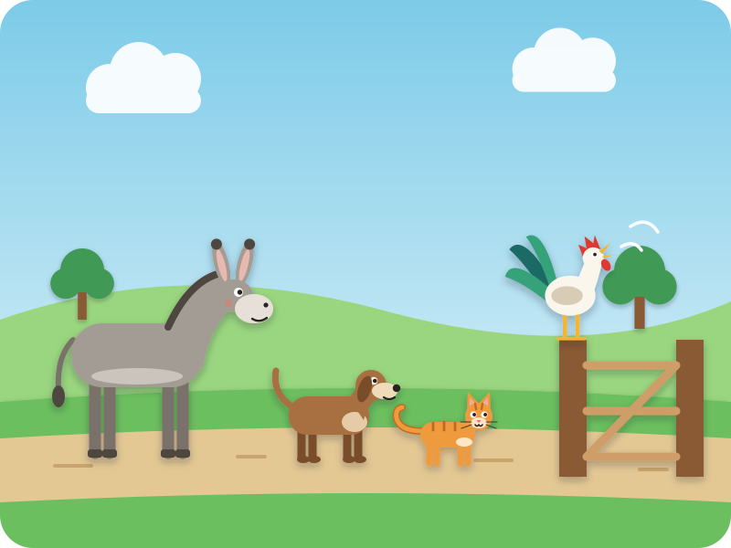
Then they met an old rooster on a gate, crowing with all his might. "They say I'm too old," he said.
"Come with us to Bremen!"
"HEE-HAW! WOOF! MEOW! COCK-A-DOODLE-DOO!" Kai does all four!
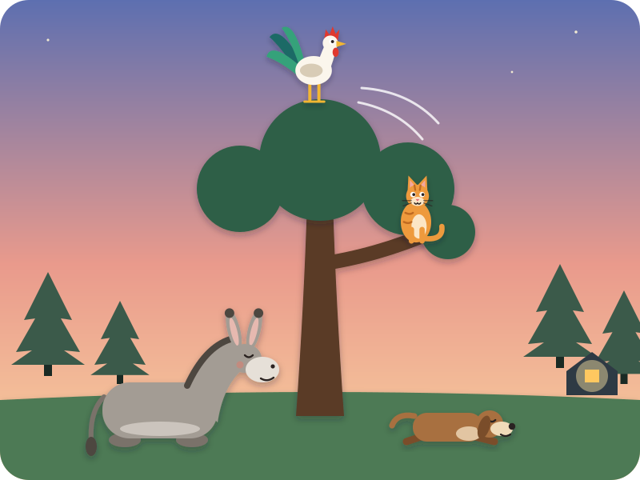
But Bremen was far away, and night came. They stopped in the woods to sleep.
The donkey and the dog lay under a tree. The cat climbed into the branches. The rooster flew right up to the top.
"I can see a light!" he called.
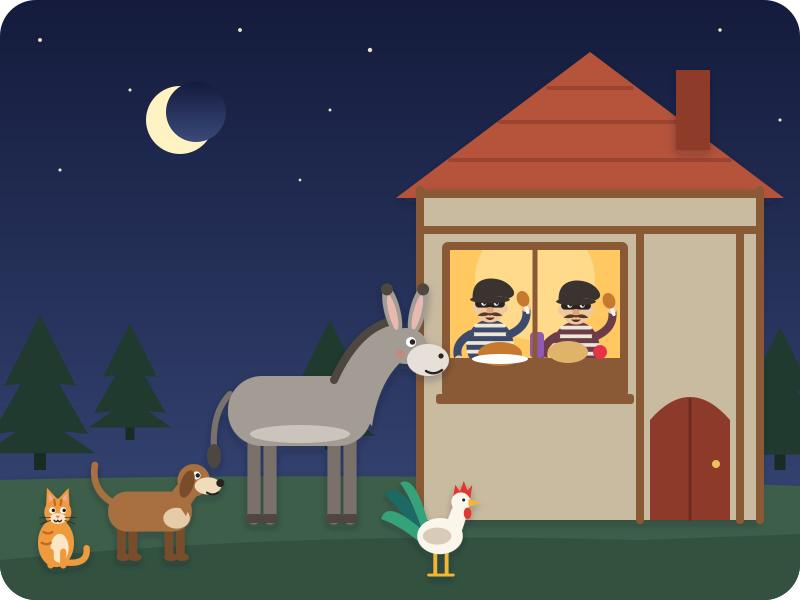
The light came from a little house. The donkey was the biggest, so he peeked in the window.
"Robbers!" he whispered. "And they're eating a great big feast."
"Ooh," said the others. "We're so hungry…"
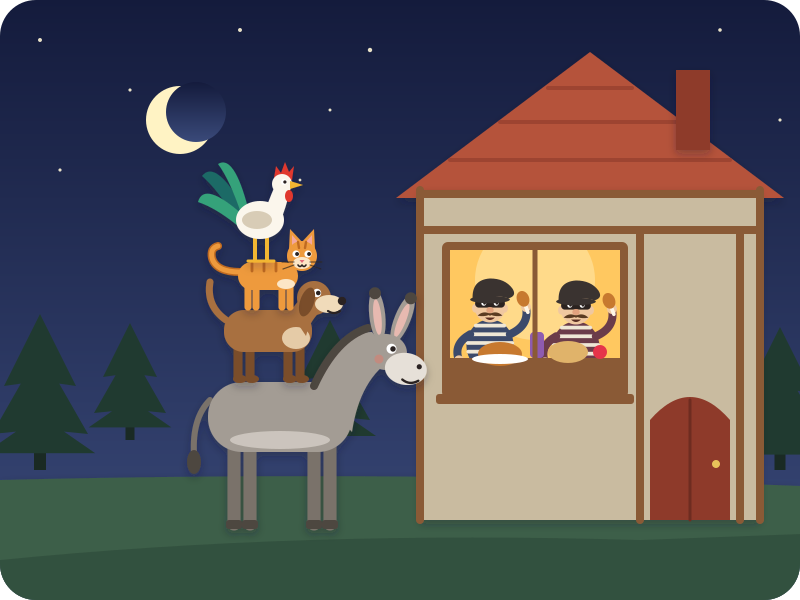
So they made a plan. The dog jumped onto the donkey's back. The cat climbed onto the dog's back. And the rooster flew up onto the cat's back!
A musical tower! Kai counts them, bottom to top: one, two, three, four!
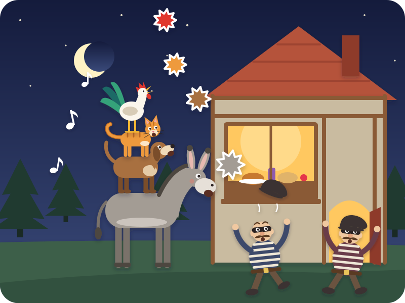
"One, two, three — SING!"
"HEE-HAW! WOOF! MEOW! COCK-A-DOODLE-DOO!" Kai, as LOUD as he can
The robbers had never heard such a noise! Out of the door they ran, and away into the woods.
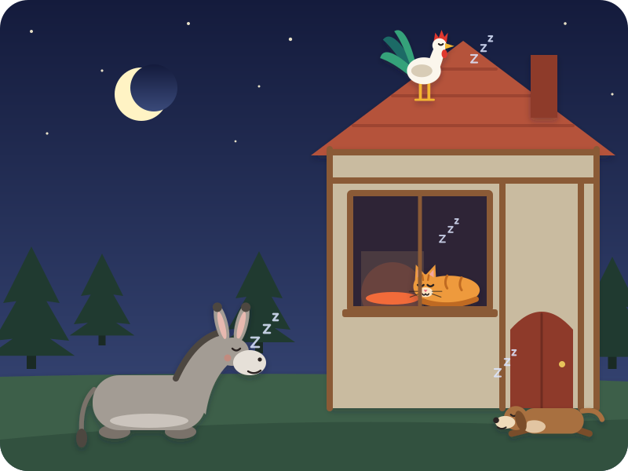
The four friends ate up the whole feast. Munch, munch!
Then they blew out the light and found sleeping places: the donkey in the yard, the dog by the door, the cat by the warm fire, and the rooster up on the roof. Goodnight!
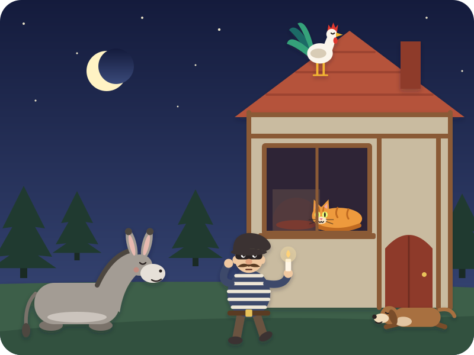
Late at night, one robber crept back to see. Creep… creep… creep… Kai tiptoes his fingers
Everything was dark. Then he saw two little eyes, shining by the fire…
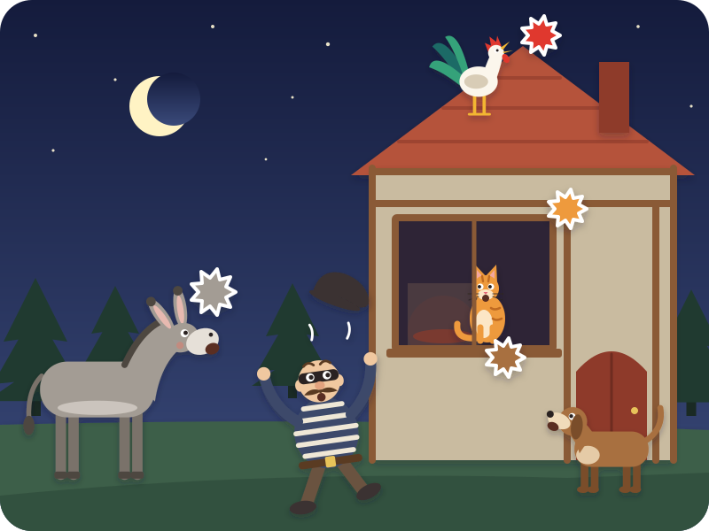
"MEOW!" said the cat. "WOOF!" said the dog. "HEE-HAW!" said the donkey. "COCK-A-DOODLE-DOO!" said the rooster. Kai does each one
The robber ran all the way back. "That house is full of noisy monsters!" And the robbers never came back again.
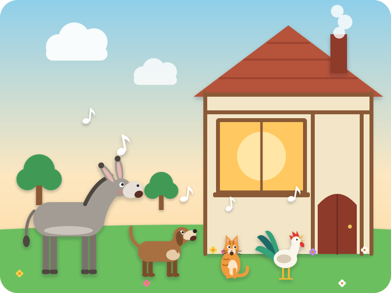
And did they ever get to Bremen? No! They liked their cosy little house so much that they stayed there, and sang together every day.
One last time, all together: "HEE-HAW! WOOF! MEOW! COCK-A-DOODLE-DOO!"
The End
"Snip, snap, snout — this tale's told out."
Swipe back to read it again
Driving? Tell it without the page · six beats
The picture book is for home, bedtime, or a passenger. In the car, tell it from memory — bold is Kai's part.
- An old donkey is told he's too old to work, so he sets off to be a musician in Bremen — "HEE-HAW!"
- He meets an old dog, then an old cat, then an old rooster, and each time says "Come with us to Bremen!" — and the song grows: "HEE-HAW! WOOF! MEOW! COCK-A-DOODLE-DOO!"
- Night comes in the woods. The rooster, at the top of a tree, spots a light — it's a house where robbers are having a feast.
- The animals make a tower: dog on the donkey, cat on the dog, rooster on the cat — one, two, three, four!
- They all sing at once — "HEE-HAW! WOOF! MEOW! COCK-A-DOODLE-DOO!" — and the robbers run off into the woods.
- One robber creeps back in the dark (creep, creep), gets a big noisy surprise and runs away for good. The animals stay in the cosy house and never get to Bremen at all.
After the story · car-friendly wondering
"If you joined the band, what noise would you make?"
"Who was at the bottom of the tower? Who was at the top? Why do you think the donkey went at the bottom?"
"The farmer said the donkey was too old — but what could he still do really well?"
Where this story comes from
This is a German folk tale, Die Bremer Stadtmusikanten, tale number 27 in Jacob and Wilhelm Grimm's Kinder- und Hausmärchen (Children's and Household Tales). It was not in the first edition (1812–15); the Grimms added it in the second edition of 1819. In the Grimms' telling, each animal runs away because its owner means to be rid of it now that it is old, and the donkey tells the rooster that they can find something better than death anywhere. The rooster spots the light from the top of a tree; the four stand on one another — donkey, dog, cat, rooster — make their "music" at the robbers' window and then crash in through it, and the robbers flee. When one robber creeps back in the dark, he mistakes the cat's shining eyes for live coals, and the animals scratch, bite, kick and crow him back out; he tells the others the house is full of terrible people, including a witch and a judge up on the roof. The animals like the house so much that they stay, and never reach Bremen. This retelling is our own, for a 4-year-old: the owners only say "you're too old", the animals sing outside the window instead of breaking it, and the robber who creeps back is only startled by the noise, not hurt — his "noisy monsters" is our gentle stand-in for his tall tale. The signpost, having just two robbers, their stripy shirts and masks, the timber-framed house and the animals' colours are our picture-book choices. Other tellings of the story differ, and we haven't tried to trace them here. Bremen today has a well-known bronze statue of the four animals standing on each other's backs, beside its town hall.